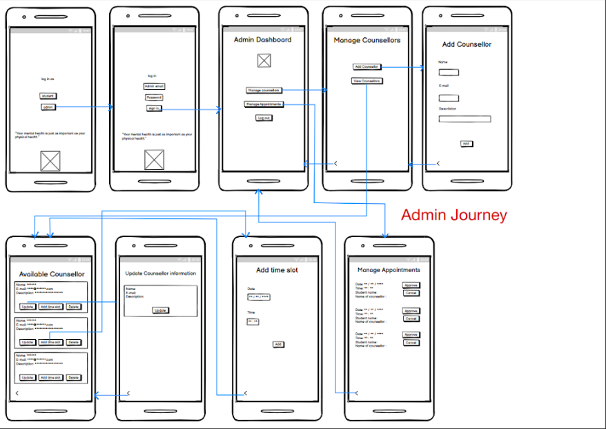
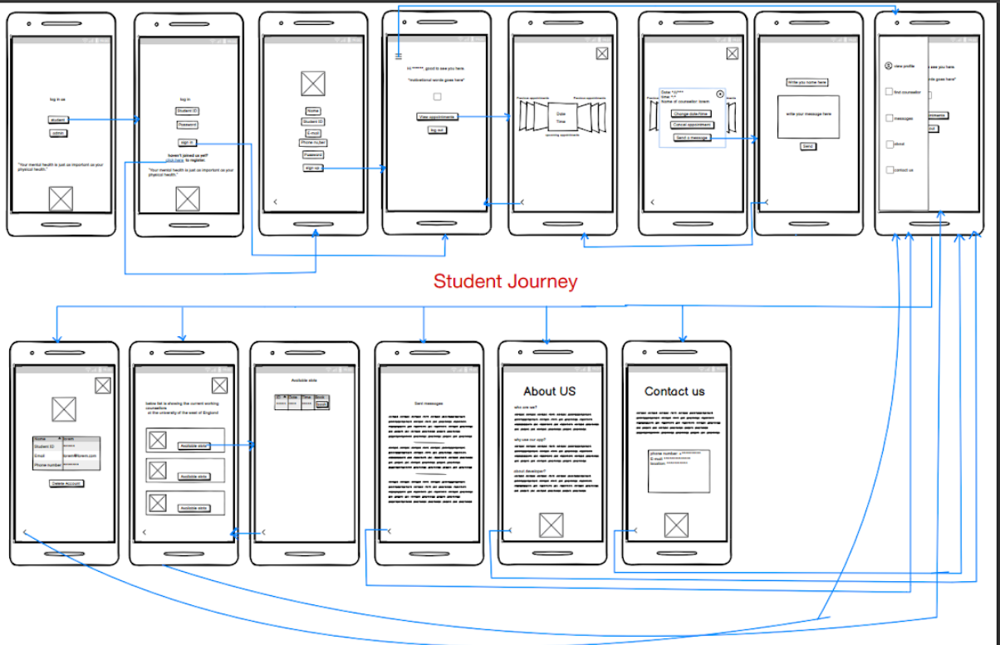
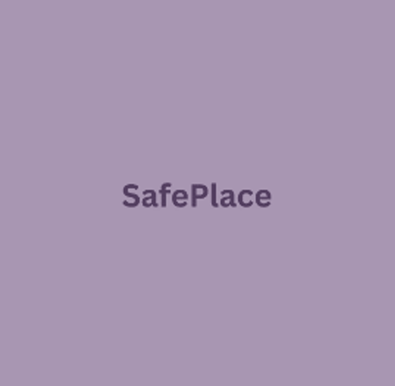

Project Overview
Safe Place is a user-friendly mobile app designed to provide university students with access to counseling services. It allows students to book appointments, communicate with counselors, and manage their mental health needs effortlessly.
Prototype Presentation
Target Audience
- Users: University students
- Challenges: Academic stress, transitional challenges, personal growth
- Technology: Comfortable with mobile apps and online platforms
- Diversity: Inclusive and culturally sensitive to a diverse student population
User Research
The design was inspired by apps like Labayh and Booking.com. These apps informed the design decisions around ease of use, user interface aesthetics, and important features such as appointment booking and in-app communication.
User Stories
- Student: "I want to browse counselors and book a session."
- Admin: "I need to manage counselor profiles and appointment schedules."
- Messaging: "I want to have private conversations with my counselor."
Wireframes
Below are wireframes representing both student and admin journeys, covering login, appointments, and counselor management.
 UI Elements & Design Choices
The design utilizes calm colors, minimalistic icons, and clean typography to create a soothing and accessible interface for users.
- Colors: Calm purples and soft greys (#A896B2, #805F95, #D9D9D9, #DED1D1)
- Icons: Minimalistic and easily recognizable icons for navigation
- Typography: 'Ubuntu' font for readability
Mockups
The mockups for the Safe Place app were created in Figma, showcasing the final design for both students and admins.
View Mockups on FigmaApp Icon
The app icon features a calming purple hue, designed for readability and recognition across devices. It aligns with the app's mission to provide a secure space for mental well-being.
